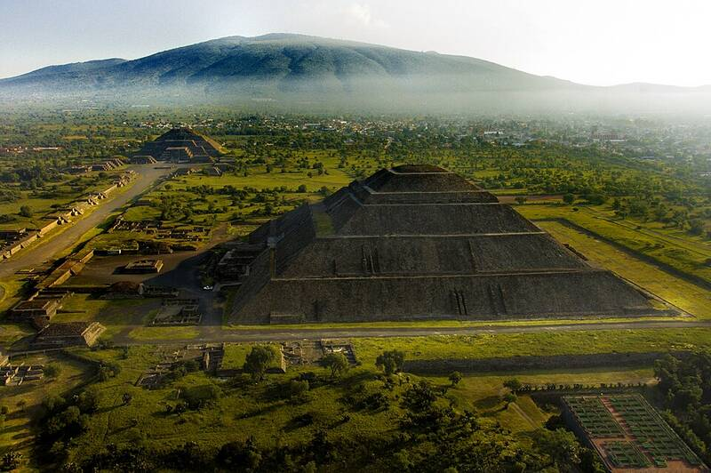

Teotihuacan
Near Mexico City, Mexico, about AD 100 to 550

An ancient city with the Pyramid of the Sun, one of the largest pyramids in the world, and the Pyramid of the Moon, linked by the Avenue of the Dead. Its builders remain unknown, and later Aztecs gave the ruins their names. 1
Open in the interactive Watcher
Sources
- Teotihuacan Wikipedia